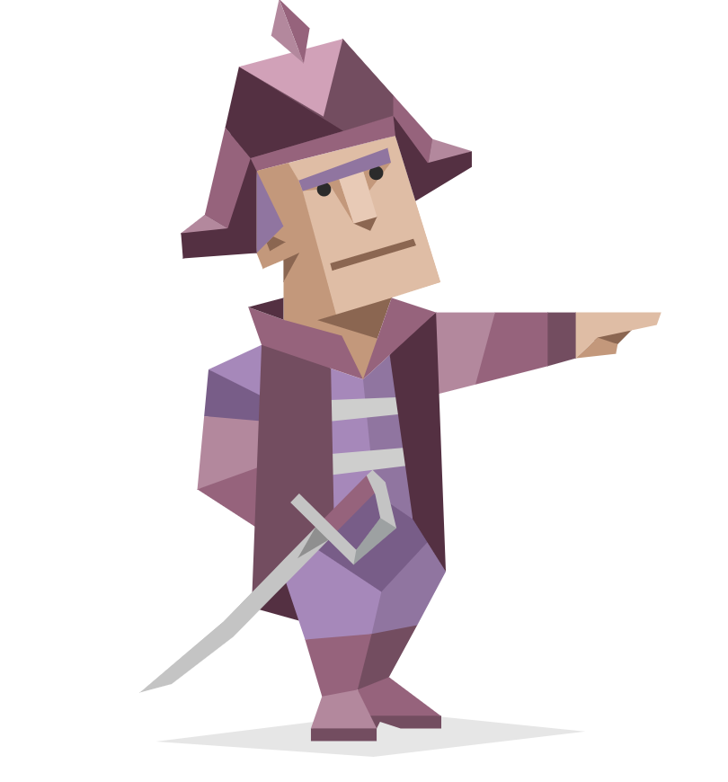
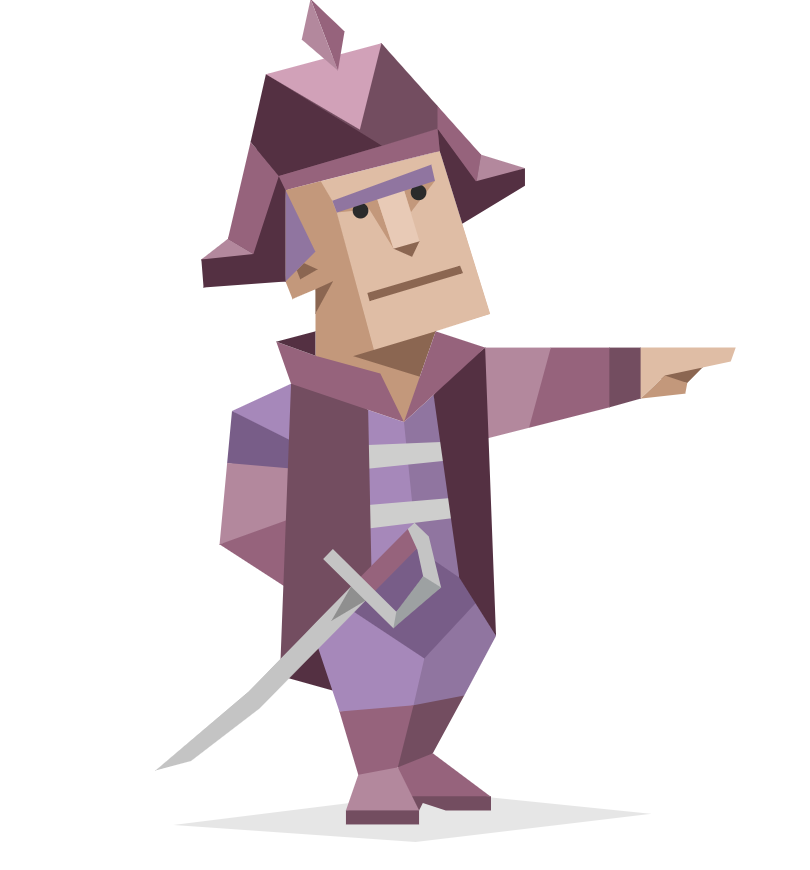

Hi my name is Liam I am a student at RMIT and I am Australian born and I am culturally rural victorian as I grew up in Bendigo, I speak English as my first and only language although
that is something that I have always wished to change and hope to do so, and in 2020 I completed year 12. Providing an Interesting fact about myself is rather challenging for me as I have
always been me and as a result don’t find myself to interesting and often forget fairly standard things about myself but I do enjoy playing video games mostly those of the 4X and strategy
genre such as many games by paradox interactive and games belonging to the Total War series as well as others but I do also play a lot of other games from different genres and franchises too.
I have been interested in IT for as long as I can remember as dumb as that may sound. My dad works in Telecommunications and although not too directly related to IT it meant that I growing
up was always around computers, technology, and the internet. My interest in IT is fairly broad and I enjoy various aspects of it particularly programming and design aspects as I can be fairly
creative while being pretty logic driven. I also enjoy working with computers generally although my knowledge on hardware is fairly lacking and I do better when dealing with software and due to my
father I have some knowledge and experience with networks.
Even though I have almost always enjoyed IT I think it started in year 7 when we had a term of a computer class that I have forgotten what was called but it was in that class that I first
started programing to a degree using drag and drop to create fairly basic programs and games and it was in this class that I realized how much I enjoy it. However it was likely year 8 when this
interest really kicked off when picking electives I took year 8 computing which was the continuation of the class from year 7 which is ware I met Mr Vaughan who I remember being fairly cool yet
daggy and encouraged me to continue with the subject and my interest. I don’t have a lot of IT experience I have been programming in some form since year 7 and did a lot of it in years 9 and 10
but less and 11 and 12 due to subjects and school requirements and in these classes going from years 7 to 10 I did small amounts of other IT related topics but outside of school I did very little
aside from the bits and pieces of stuff I would do with my dad.
I chose to come to RMIT because it is the best school in the state (and possibly the country) for technology and related subjects which IT is. I also really wanted to be in the city and around
where things where happening and with how active and cool RUSU (the student union) it seemed like the perfect fit for me.
I hope to learn a lot from this course and expand my knowledge on the subjects although I doubt I’ll learn anything completely new that I knew nothing of before but mostly just expanding and
broadening my knowledge and skills in the subject. That being said I would love to be pleasantly surprised and discover a previously unknown subject within IT that I knew nothing of beforehand
and I look forward to learning in an interesting environment and am always open to learning new things.
After having taken the Myers-Briggs test I received the Commander ENTJ-T personality type which description reads “Commanders are natural-born leaders. People with this personality type embody
the gifts of charisma and confidence, and project authority in a way that draws crowds together behind a common goal. However, Commanders are also characterized by an often ruthless level of
rationality, using their drive, determination and sharp minds to achieve whatever end they’ve set for themselves. Perhaps it is best that they make up only three percent of the population, lest
they overwhelm the more timid and sensitive personality types that make up much of the rest of the world – but we have Commanders to thank for many of the businesses and institutions we take
for granted every day.”
 

After having taken the educationplanner.org Learning Style test with my results coming back as Auditory: 35% ,Visual: 30%, and Tactile: 35% in terms of learning preferences with resulting
learning type being Auditory/Tactile. The description for these two reads as “If you are an auditory learner, you learn by hearing and listening. You understand and remember things you have heard.
You store information by the way it sounds, and you have an easier time understanding spoken instructions than written ones. You often learn by reading out loud because you have to hear it or
speak it in order to know it. If you are a tactile learner, you learn by touching and doing. You understand and remember things through physical movement. You are a "hands-on" learner who prefers
to touch, move, build, or draw what you learn, and you tend to learn better when some type of physical activity is involved. You need to be active and take frequent breaks, you often speak with
your hands and with gestures, and you may have difficulty sitting still.”
After having taken the MindTools creativity my results returned as a 56 out of 80, this being in the high part of the middle creativity range of 37-58. The test also identified problem finding
as my largest issue involving creativity and the area that needs the most improvement although it was only a 3/5 instead of the 4/5 that the other areas resulted in. The description of this range
reads as “Your creativity is a "work in progress." You've had some successes, so now it's time to let loose and stretch yourself. Share your ideas and perspectives with others, and ask them how
they view problems. Adopt a collaborative approach to problem finding, and work actively with others to create and innovate. The tools and resources below will help you get to the next level of
creativity.”

The results of these tests mean very little to me as they are very subjective especially in the way the questions are asked and as I saw when on two separate occasions I took the Myers-Briggs
test I received slightly different results both time, although still with the same end personality type, the answer to these questions changes on a given day. I find it very problematic to reduce
the complexity of a person’s behaviour and personality into a calculable series of numbers and believe it is far more effective and better to simply observe a person working and how they work
with those around them as a team and see what role they fill within that team. I find the learning style test rather useless as through experience I find that I generally do not do well with
purely auditory instructions as a method of learning and need diagrams and demonstrations and written instructions to easily refer back to which is not what the learning test indicates. I also
am unsure of how to interpret the results of the creativity test as I have always thought of myself as being rather creative when it comes to problem solving if not being artistically challenged
but I will never argue that I do not have room for improvement. In terms of problem identification as my biggest challenge I find it incredibly odd as I find it incredibly easy to find issues and
problems within mine and others work and plans often to deficiete of over looking positive aspects. With all that being said I am unlikely to remember my results in these tests or for that matter
have any affect on my decisions making, although I do not appreciate the comparison to Margaret Thatcher.
Despite my apprehensions as to how useful the test I do agree that I naturally trend towards a more leadership or dominating position in a team. This is neither an entirely positive nor negative
factor however. I believe it is imperative for an effective to have some form of leadership even if said leadership isn’t an official role and that without said leadership a team can easily lose sight
of its goal and become distracted. Of course the most obvious factor is that if I am placed in a team with another person positioned to lead then a clash can often occur and thus making the team less
effective than it would otherwise be. I believe unity is just as important in a team as leadership is and I will be the first to admit that I would see teams unify around myself and can often cause
issues if this is not the case. The second issue and perhaps the least obvious is that I can often over prioritize my own ideas over others in the group and this can be at the detriment of the group
both from the perspective of having other team members feel included and valued and in that genuinely good ideas can be ignored as they might be less conventional and not immediately obvious in how
they benefit the accomplishment of the goal, this is something that I believe I have worked to remove and continue to do so to better work within teams. I also do not see my learning results having much
effect on any team I may be present within as I already know how I learn best and have a good grasp on how to learn and thus will unlikely allow this to affect my ability to work in a group as the process
of learning while can be done as a group is a very individual subjective experience. I believe the results of the creativity test do have some impact on the team dynamic as creativity and differing thought
processes is important in a team to tackle complex issues and it could potentially be and issue having someone in a leadership position with what appears to be a creativity level that is towards the less
than ideal end of the spectrum.
When creating a team I would think this would indicate that I should be placed in a position to lead said team and not be positioned to clash with another person. Of course qualifications to lead
should be prioritised when selecting team leaders and stating that I should be placed in a position of leadership simply because I feel as though that is where I should be is rather ignorant of the
realities of teamwork and rather arrogant at the same time. I doubt one's learning style would ever be all that relevant in creating a team and would be more relevant in group learning exercises where
it would be ideal to group people who learn in a similar way together but I struggle to see how it can be as relevant in a cooperative team. However I would believe it is critically important to consider
the overall creativity level of a team and would see it as important to place an individual with a very high level of creativity within a team with myself to counteract my lower level of creativity and
to generate ideas for the group.
The CTO position at Hub australia is a high level leadership role which oversees and directs development and implementation of technologies throughout the business and clients. The CTO reports directly
to the CEO and is the highest IT position in the company, this gives the position lots of influence both in the company but also outside of as a high level IT professional. The CTO would also lead teams
and create specific work environments to encourage improved productivity. The CTO also works heavily with third party businesses whether they be clients, contractors or partners, this allows for a wide
range of networking opportunities and will make moving to other companies and industries easier. The role is appealing due to its high salary, starting at around 190K with other benefits with that as well
as the high level of leadership and the influence both within this company and others that work with Hub. The only issue with this job would potentially be high level of stress that often comes with high
level leadership positions but the required work hours are only 38 rather than the standard 40 and what is usually much higher for high level leadership roles in companies. The high salary and reduced work
hours means that even if the job itself is not overly satisfying then it leaves plenty of room to do things that are more satisfying and make life happier, the high salary and high position also means that
the potential of having a family while working in this position is fairless risky than it may be in some other positions.
As expected of a high level leadership role like that CTO the requirements for very high requiring extensive experience in the IT field and a high level understanding of technologies and the industry.
The position also requires someone to have filled a similar role even if slightly lower level in the past and have experience leading IT teams. Experience in managing stakeholders is also required as well
as experience with balancing balance strategic and operational perspectives is required. The position also requires a number of personal skills like the ability to take responsibility for mistakes, ability
to embrace and adapt to change, ability to build lasting relationships, being respectful in how you criticise and challenge others, and the ability to make informed decisions.
None of the industry experience requirements can be met at this stage as they would require years worth of work in the IT industry that as of yet have not been completed. The personal skills are ones
which are ones that are for the most part met at this stage however. The ability to recognise and take responsibility for mistakes is a skill I've been practicing for some time now and I’m more than willing
to fall on my sword when needed thus fulfilling the requirement. The ability to embrace and adapt to change is also a skill I currently possess and can be best seen when at the start of 2019 I changed secondary
schools very abruptly and with little warning and quickly adopted to this change, it can also be seen when at the start of this year I moved and started studying in melbourne which is a very extreme change
compared to country victoria. I consider myself some who can take and use criticism well and also respectfully return that and challenge other ideas and I am always one to do plenty of research and ask for
secondary opinions before making decisions. As for building lasting relationship, as someone is recently single again, this is still an area that needs improvement.
The easiest way to fill the missing requirements at this stage is also likely the only realistic way to do so and that is to work in the IT industry and build up the skills and connections required to
fulfill the role. Starting in lower level IT positions and then working upwards is the most logical option, likely moving between companies and even industries to build up a portfolio that meets these requirements.
The project is a snack and beverage planner and maker that is still pending a name. The project would use an app that is connected to a device that prepares and delivers snacks and drinks based upon the mood,
emotional state, exhaustion levels of the user. It will do this by having a access to the schedule of the user thus being able to judge how hard their day has been, the user would also be able input several things
into the system including schedule changes and additions as well as mood and other factors that may affect what is needed to judge what kind of beverage and snack is needed for that given day. The end result would
be a system that upon arrival home would have already begun preparing a drink and snack for its user to help them with their day, these can range from a coffee or energy drinks to tea and alcohol and a variety of
snacks like chips, shapes, or cakes.
The chief motivator behind this project is the same thing that drives all human innovation that being laziness and the desire to make life easier. Modern life is hard and complicated and we’ve developed many snacks
and drinks to help us cope with it but even now we are required to calculate what it is that we need most at that moment and we can sometimes get this wrong, this is especially true when we are tired when such things
are especially necessary. How many times have you been tired and needed a snack and you’ve opened up a bag of chips to only realise shortly after that you would have actually rathered a box of shapes. This is the driving
forces behind the project.
The project consists of two core elements. The first is an app where by the user inputs the needed data so that the app can calculate what it is the user needs. The second is a physical appliance that creates and or
retrieves the needed refreshments and snacks, this device would then prepare these and deliver them to the user requiring minimum effort from the user. This process would start by the user inputting their schedule into the
app, answering a number of questions regarding their eating and drinking habits and preferences as well as how various activities make them feel and deity and health requirements and conditions, this would create a basic
outline for the app to use when deciding what is necessary that day. Next each day the user then inputs their mood and energy levels and if they are able to relax or if things still need to be done. Finally the app would
look at news and current events, the weather and time of year, as well as what the past couple of days involved and what the next couple of day will involve for the user. With these inputted the calculations begin and the
app determines the best thing to deliver to its user. Perhaps the user has just had a hard day of manual labour in summer and has returned home to relax and watch some cricket, then the app would likely decide that a cold
beer and a box of shapes is what is most needed by the user. Conversely perhaps the user had a very late night and did not sleep well but still needs to do some work at home for a stretch of time then the app may decide that
a coffee and something high in sugar is needed for the user. This is where the physical device side of the project comes into play. The devices would take the decision of the app and act upon that collecting and or creating
the needed food and drink. The devices would have limited cooking capabilities and would only be able to warm any food but would be capable of creating hot drinks as well as mixed drinks and cocktails. These would then be
delivered by the device to the user through a robotic waiter (said robotic waiter would resemble a roomba with a plate more than a real waiter) thus completing the task. The app would also utilize a learning algorithm to
better learn and adopt to what the user requires as well as to study the habits of other users to discover patterns that can be used to better serve the users of the device.
The app side of the project is both the simplest and the most complex side as it would require an algorithm to be able to make these calculations and would likely need to be developed using a programing language that is
optimal for making large calculations and one that can also be used to create an automated device or at the least be able to create several outputs that can easily used by a programing language that is better suited to robotics.
The robotic device itself would require a simple and robust robotic butler that is unlikely to spill any of its contents and that can easily traverse a home. The actual drink and food preparing section of the device would be
relatively easy as it would simply be a combination of various technologies like that of automated cocktail machines, coffee makers and a small microwave.
App and algorithm development skills are the most key part of this project as well as more broad software development skills, these will be required for the development of the app side. Web and wireless skills will also
be needed to be able to have the app and robotic device interact and communicate as well as for the development of a web version of the app to act as a redundancy option. Robotics and system engineering skills will also be
required for the robotic side of the project to both create the physical device and to make it work and run, preferably there would also be some experience in working with food and drink appliances and designing those as well
as a knowledge of the drinks and foods utilized.
If the project is developed and is successful then it would allow Australians to continue their favourite pastime of being lazy and relax without hassle. The project would allow for focus in the average persons life to be
taken away from what snacks and drinks they will need for what ever it is they need them for and instead allow them to focus on other things more important in the moment.